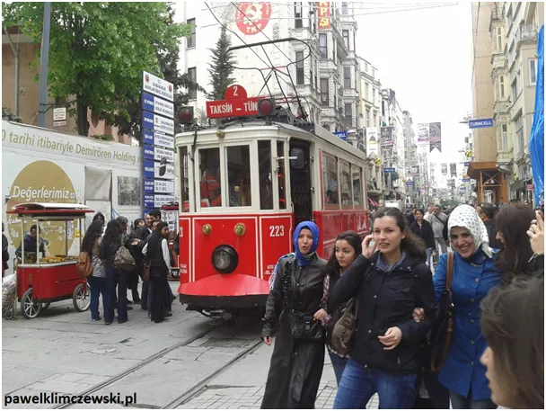
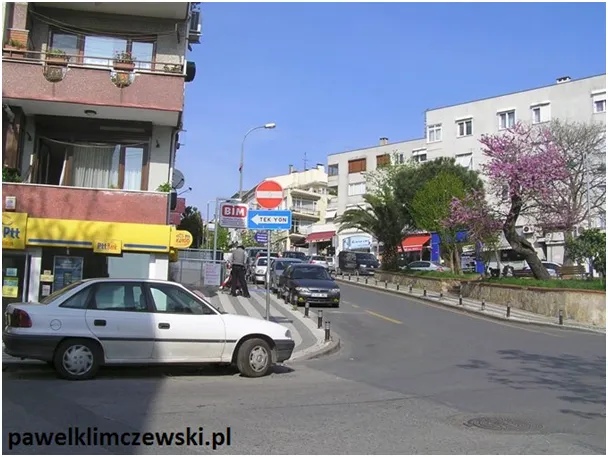
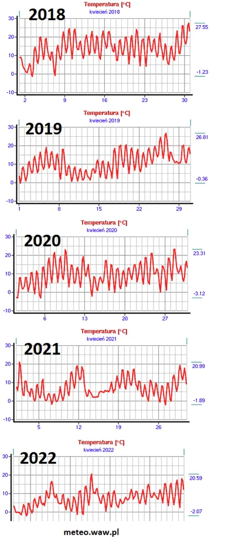
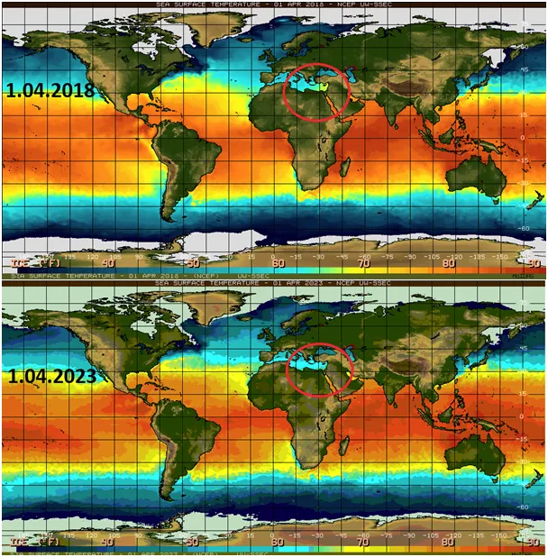

Wiosna przyjdzie z Azji
Kilka wspomnień ze Stambułu w kwietniu, to idealny czas, aby całymi godzinami włóczyć się po mieście pełnym kwitnących drzew. Jest czasem chłodno, co widać po typowych skórzanych płaszczach, ten krój to wizytówka Turcji. Chusty na głowie to już kwestia tradycji, oznaczają konserwatywne, religijne wychowanie. To, co w Turcji mnie urzekło, to prawie reguła, że gdy idą dwie przyjaciółki to jedna ma chustę a druga nie, różnorodność jest tam wartością a sam Stambuł to mieszanka wszystkich możliwych religii i szacunek dla inności.

Kwiecień plecień bardzo różnie rysuje się w naszej pamięci. Z powodu zmiennej daty Wielkanocy i zmienności aury w tym okresie pamiętamy go bardzo różnie. Ostatnie lata zasłynęły wielkanocnymi bałwanami. Na dziś jest opcja, że na święta dotrze do nas ocieplenie z Azji, wyjątkowy układ, gdzie wiosna przychodzi od Białegostoku i Rzeszowa.

Tymczasem spójrzmy jak to bywało w ostatnich latach. W latach 2018 i 2019 do 27 st. C. Niestety w latach kolejnych maksima już niższe.

Zestawiłem temperatury mórz z 1 kwietnia 2018 i 2023. Wyraźnie widać jak wschodnie Morze Śródziemne było wtedy rozgrzane. Żółty kolor to ponad 21 st. C, jeśli w Bałtyku jest tyle w lipcu to wszyscy są zachwyceni.

Aby rozgrzać tak wielki akwen potrzeba wielu tygodni ciepłych wiatrów i dużo słońca, tymczasem w tamtym regionie obecnie pada śnieg. Za tydzień zacznie wiać z Egiptu i przez Morze Czarne do Rzeszowa, tyle model komputerowy, my patrzmy na rośliny, to one świadczą o tym jaki mamy klimat. Zamiast palm mamy wierzbowe gałązki i tego się trzymajmy.
Paweł Klimczewski